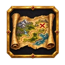

Le Bastion Krol'dok niveaux 40 à 45 Nouveau
Sur une colline au nord de Clair-Soleil, les ogres Krol'dok ont fait de leur capitale une immense forteresse à ciel ouvert. Des sectateurs du Marteau du crépuscule et des gnolls Sombrepoil s'y sont installés. C'est l'un des neuf nouveaux donjons de Forever, au bout de la zone des Rives Claires.
📅 Mise à jour le 25 novembre 2026🛠 Patch 1.60.1.71037
Accès

Entrée Rives Claires 37.5, 37.2 5 joueurs · niveaux 40 à 45
5 joueurs · niveaux 40 à 45 8 quêtes · 6 boss
8 quêtes · 6 boss
Le portail est dans une petite grotte à l'ouest des grandes portes fermées de la forteresse. Alliance : point de vol du fort de Farholde, puis cap au nord par Clair-Soleil. Horde : point de vol de Rog'mar. Le gardien des âmes est juste devant l'entrée. Aucune clé n'est nécessaire pour entrer.
Toutes les zones sont sur notre carte interactive.
Carte et parcours
Plan du donjon en jeu : capture à venir.
La vidéo du donjon
 ▶
▶
Le Bastion Krol'dok : donjon complet, avec les 6 boss jusqu'au Suzerain Mugg, sur la chaîne YouTube Mygale TV. Toutes nos vidéos sont sur la page Vidéos.
Les boss et leur butin
1 Brise-esclave Grox Slavebreaker Grox
Dégage la zone avant et tue vite les gnolls. Obéissance forcée appelle des prisonniers des Carmines : élimine-les rapidement. Il étourdit sa cible 2 secondes et gagne 30 % de vitesse d'attaque (Furie sanguinaire).
| Objet | Type |
|---|
| Resistance Breaker Spaulder | Épaules |
| Chain of Binding | Cou |
| Slavecrusher Scepter | Masse |
| Plan : feu de camp de spécialiste | Plan de camp |
2 Commandant du Crépuscule Zarmok Twilight Commander Zarmok
Nettoie les sectateurs autour avant. Tourbillon tranchant touche tout le monde à 8 mètres et fait saigner 15 secondes : distants et soigneur restent loin.
| Objet | Type |
|---|
| Shadecaster's Leggings | Jambes |
| Zarmok's Plated Signet | Doigt |
| Shadowlight Athame | Dague |
3 Marchande de guerre Ashka War Handler Ashka
Tue d'abord ses deux loups, Grognecroc et Terrorhowl. « Tue ! » envoie un loup sur un joueur au hasard pendant 10 secondes : étourdis-le et protège la cible.
| Objet | Type |
|---|
| War Handler's Gaze | Tête |
| Worgbinder's Treads | Pieds |
| Bloodied Gutslicer | Arme |
4 Nar'gurk
Accompagné de trois sectateurs : contrôle-les (Métamorphose, Assommer, Peur) ou tue-les d'abord. Convertir prend le contrôle d'un joueur : descends-le à 50 % de vie, puis arrête de taper et soigne-le. Il porte le Tome du Crépuscule.
| Objet | Type |
|---|
| Krol'dok Warplate Helmet | Tête (plaques) |
| Krol'dok Warplate Chest | Torse (plaques) |
| Chain of the Corruptor | Cou |
5 Boss Kof Bossman Toof
Sur le pont, des brutes arrivent par deux sans arrêt. Élimine d'abord les centurions et les chamans, puis lance le boss juste après une vague. Frappe mortelle réduit les soins sur le tank de 50 %.
| Objet | Type |
|---|
| Big-Belly Belt | Taille |
| Band of Bossman | Doigt |
| Toofbreaker | Arme |
6 Suzerain Mugg Overlord Mugg
Le dernier boss, avec deux centurions à tuer ou contrôler d'abord. Heurt écrasant le fait sauter sur un joueur au hasard : ne restez pas groupés. Il change d'armes et frappe 20 % puis 50 % plus fort : garde tes protections pour la fin. Il donne l'Œil de Mugg et la Clé d'Ogre krol'dok.
| Objet | Type |
|---|
| Strongly Scented Hood | Tête |
| Mugg's Crosser | Arme |
| Mugg's Jabber | Arme |
| Emblem of Slamming | Bijou |
| Clé d'Ogre krol'dok | Clé |
Butin d'après le guide de wow.gg. Ces nouveaux objets n'ont pas encore de nom français dans les données du jeu : on garde le nom anglais pour l'instant. Passe la souris sur un objet pour voir ses caractéristiques (info-bulle Wowhead), ou clique pour ouvrir sa fiche.
Les quêtes du donjon
Souvenirs du Crépuscule niveau 42 Alliance
Donnée par : Sergent Faillan, Voile du Crépuscule, Rives Claires (30.6, 49.0)
Objectif : Récupérer 8 bracelets du Crépuscule sur les sectateurs du donjon.
Dès le niveau 38. La suite (2 petites quêtes de livraison au fort de Farholde) donne un collier.
Tome du Crépuscule niveau 44 Alliance
Donnée par : Ashe Amberhall, fort de Farholde (66.6, 81.0)
Objectif : Récupérer le Tome du Crépuscule sur Nar'gurk.
Dès le niveau 39, après « Un petit service ».
L'œil de Mugg niveau 45 Alliance
Donnée par : Demar Brant, fort de Farholde (66.6, 81.0)
Objectif : Rapporter l'Œil de Mugg, sur le Suzerain Mugg.
Dès le niveau 40. Une arme au choix (gourdin, bâton…).
La vengeance des Bien-nés niveau 45 Alliance
Donnée par : Ranath Foulenuit, Dalaran, Montagnes d'Alterac (17.8, 66.0)
Objectif : Tuer Zalfan Lunombre dans le donjon.
Dès le niveau 37.
Un gage de vengeance niveau 42 Horde
Donnée par : Da'grosh, devant la forteresse (33.4, 38.0)
Objectif : Récupérer 15 oreilles de sectateur dans le donjon.
Dès le niveau 38.
Tome du Crépuscule niveau 44 Horde
Donnée par : Tran'gul, Rog'mar (59.4, 44.0)
Objectif : Récupérer le Tome du Crépuscule sur Nar'gurk.
Dès le niveau 39.
L'œil de Mugg niveau 45 Horde
Donnée par : Krom'rosh, Rog'mar (59.4, 45.6)
Objectif : Rapporter l'Œil de Mugg, sur le Suzerain Mugg.
Dès le niveau 40. Une arme au choix.
Moulage krol'dok, puis Ingrédients pour une clé niveau 41 Alliance et Horde
Donnée par : Moulage krol'dok, sur Tunk dans le donjon (juste après le 3e boss)
Objectif : Porter le moulage à Alphonse Dumas (fort de Farholde) ou Kreza Sombreronce (Rog'mar), puis apporter 4 cuirs épais et 12 barres de fer.
Récompense : la Clé de la base des Krol'dok. Dès le niveau 38.
Conseils
- Certaines quêtes demandent d'avancer d'abord dans les suites de la zone : Demar Brant et Ashe Amberhall au fort de Farholde (Alliance), Krom'rosh à Rog'mar (Horde).
- Attention aux péons du Crépuscule : ils fuient chercher de l'aide. Ralentis-les ou étourdis-les tout de suite.
- Les éclaireurs du Crépuscule patrouillent par trois et immobilisent le tank 10 secondes avec un filet : attire-les derrière un angle.
- Les chamans krol'dok sont la cible prioritaire de chaque groupe.
- L'ensemble de plaques Krol'dok (5 pièces, pour guerriers et paladins tanks) transforme son porteur en ogre une fois son bonus chargé au maximum. Le casque tombe sur Nar'gurk, le torse aussi ; les gantelets, jambières et épaulières sur les monstres du donjon.
Noms des quêtes, des PNJ et des objets d'après les données du jeu (Polestar, CC BY 4.0, et Factoruide/Questie) ; butin et informations complémentaires : wow.gg, ConquestCapped.